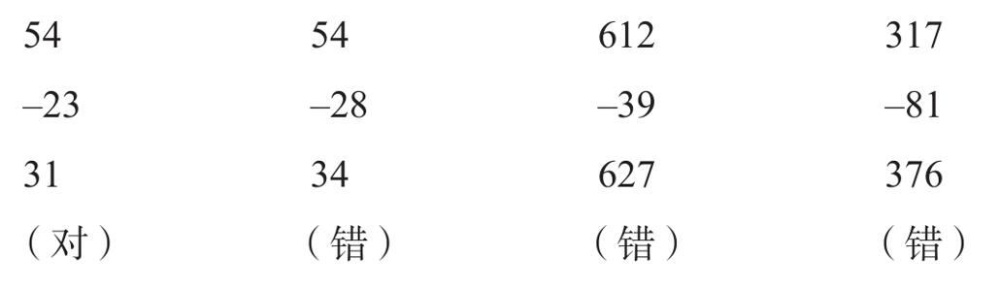

现在，让我们简单探讨一下多位数计算问题。假设你要计算“24+59”，电脑只需要不超过几微秒的时间，但你却需要2秒钟以上，电脑至少比你快10万倍。这个问题将调动你所有的注意力（后面我们将看到，负责对非自动化加工进行控制的大脑前额叶在复杂的计算中高度活跃）。你必须认真完成一系列步骤：分离两个两位数右边的数字4和9，将它们相加“4+9=13”，写下3，将1进位（carry over），分离左边的数字2和5，将它们相加“2+5=7”，并与进位相加“7+1=8”，最终写下8。每一个步骤都非常相似，以至于我可以根据数字的大小估算每个操作的持续时间，并以零点几秒的精确度预测你将在何时提笔22。
在整个计算过程中，我们似乎从来不会考虑每一步操作的意义。为什么把1进位到最左边的一列？现在，你能认识到这个1代表10个单位，因此它必须位于十位这列。然而，这个想法在计算中始终没有进入你的意识。为了保证计算速度，大脑被迫忽略它所执行的计算的意义。
另一个例子展现了计算及其意义在机制上的分离。对儿童来说，下面是很典型的加减难题：

你看到问题了吗？这名儿童并不是在随机反应。每一个答案都遵循严格的逻辑。从右到左，一个数接一个数，严格使用典型的减法算法。但是在相同的数位上，如果上面的数字小于下面的数字，儿童便走进了死胡同。这种情况需要借位，但是出于某种原因，儿童倾向于倒置运算：用下面的数字减去上面的数字。结果，差比被减数还大，这点也丝毫没有干扰到他。在他看来，计算是一种纯粹的符号操纵，是一个几乎没有任何意义的超现实主义的游戏。
美国卡内基梅隆大学的约翰·布朗（John Brown）、理查德·伯顿（Richard Burton）和库尔特·范·莱恩（Kurt Van Lehn）收集了1 000多名儿童对几十个问题的反应数据，深入地研究了减法的心算过程23。他们发现并分类了几十种前述例子中那样的系统性错误。有些儿童只对0感到困难，而另一些则只在涉及数字1时出错。一个经典的错误常出现在数字0需要向左借位时。计算“307-9”时，有些儿童正确计算了“17-9=8”，但随后未能从0中扣减1。相反，他们直接从百位中借1，错误地简化了任务，得出“307-9=208”。类似的错误经常发生，布朗和同事们借助计算科学术语来描述它：儿童的减法算法充满了“系统漏洞”（bugs）。
这些系统漏洞的起源是什么？奇怪的是，从来没有哪本教科书对正确的减法做过全面概述。若是一个计算机科学家试图在他家孩子的数学手册中找出一份精确介绍，用来编写一个广泛适用的减法流程，他可能会徒劳一场。所有学校手册的内容都在提供了基本的说明和丰富的例子之后就止步了。学生被认为应该自己研究这些例子，分析老师的行为，并得出自己的结论。所以，他们得出错误的结论也不足为奇。教科书上的例子并不能涵盖所有可能的减法。各种模棱两可的情况都可能出现。当儿童面临一个不得不即兴发挥的新情况时，他们对减法的不同理解就会表现出来。
看一下库尔特·范·莱恩研究的这个例子：一名儿童在面对同一数位上两个相减的数字相同的情况时，总会错误地从左侧一列借1（如“54-4=40”“428-26=302”），而做其他减法运算时都没问题。这名儿童能正确地认识到，一旦上面的数字小于底下的数字，必须借位。然而，他错误地把这一规则推广到两个数字相等的情况中。他的教科书中很可能从来没有出现过这种特殊情况。
另一个具有启发性的例子是：许多数学教科书仅解释了两位数字（如“17-8”“54-6”“64-38”）的减法过程。于是，学生们最初只学会了向十位借位，而它总是位于最左边的这一列。因此，在第一次面对三位数减法时，很多儿童错误地决定从最左边的一列借位，正如他们过去所做的一样（例如，“621-2=529”）。在没有进一步指导的情况下，他们怎么能猜到应该从左邻借位，而不是从最左边的一列？只有更精细地理解了算法的设计和用途，他们才能解决这个问题。然而，出现如此荒谬的错误恰好表明，儿童的大脑在记录和执行大多数计算算法时，从不关心它们的含义是什么。